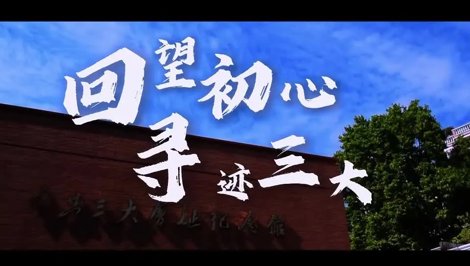

2024 年 9 月入学 · 专科在读
教育经历
在广东轻工职业技术大学，软件技术专业教我搭系统，AI 新媒体工坊让我有机会把做出来的东西交给真实用户。
- 专业学习
- 主修 Java、Web 前端、数据库、软件工程和 Python 数据分析。在工坊班，我还学习跨境建站、社媒运营、广告投放与 AIGC 内容制作。
- 课程实训
- 《寻迹三大》源于毛概课的一项研练作业。我带着自己撰写的脚本走进中共三大会址，独立完成实地拍摄与后期剪辑。这次创作让我学会围绕主题取景，再通过镜头的取舍与编排，把现场见闻讲成一个连贯的故事。
